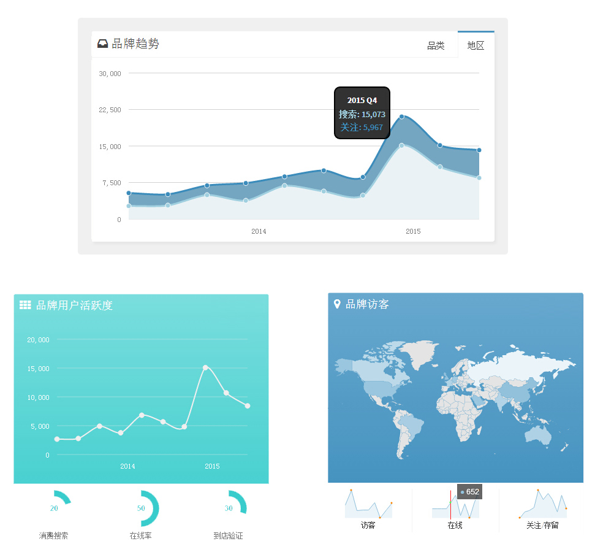
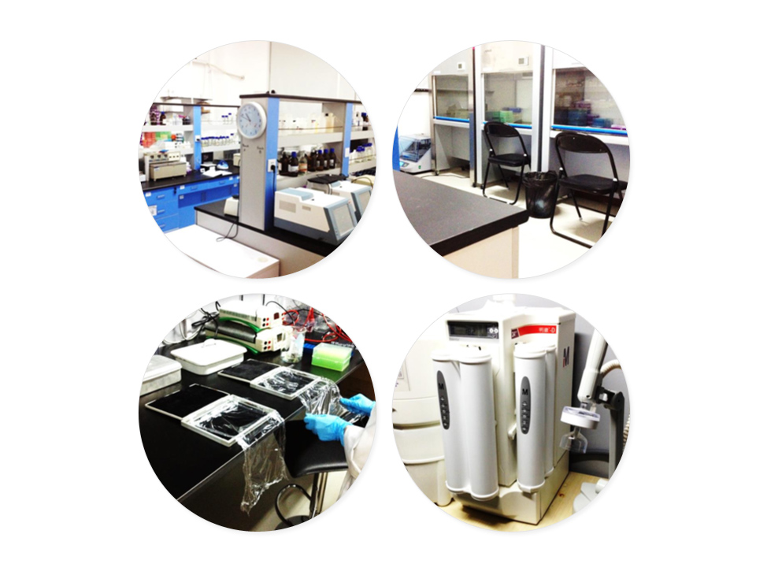

肌秘APP
肌秘是一款含羞酝酿了三年，又精心打磨半年之久的高智美妆分析工具APP。我们的服务对象是对化妆品消费有着严苛要求的高端消费者群体，肌秘将为之提供兼具科技和用感的美妆工具，从护肤品到彩妆，从美白到抗衰老，肌秘将用科学重新定义美丽。
- 使用肌秘你可以做什么：
- 全品牌全角度全成分美妆产品科学解读
- 基于个人肤质的场景化美妆产品搜索引擎
- 全网唯一可实现最高132项产品细节对比的美丽情报工具
- 全网唯一达到原料级分析水准的化妆品安全因素评价标准
- 全网唯一实现全品牌彩妆在线试色工具（内测资格申请中）
- 也许是全世界最全面的化妆品活性成分维基百科
- 了解同类肤质女性的化妆品搭配方案，注意！是方案而不是单品！
- 了解明星们使用的当季化妆包搭配方案，注意！是靠脸吃饭的明星！
JIMI Pro
肌秘Pro版是基于Web的专业化妆品行业检测服务、咨询服务与品牌服务平台，目前处于内测阶段。
- 肌秘Pro版免费向品牌商提供以下服务接口：
- 国际上最全面的原料供应数据检索引擎
- 国内顶尖的化妆品安全技术规范检验评估与报告（JIMI Lab）
- 更高级的化妆品与成分搜索引擎
- 在收费版本中，我们计划提供以下功能：
- 品牌与用户行为关联分析
- 流行功效概念趋势分析
- 新品推介效用调查
- 精准样品数据回归
JIMI Trends
- 如何发现品牌消费者的潜在需求？
- 如何在化妆品功效和市场决策之间寻找平衡点？
- 消费者的关注与消费到底有什么关联？
一切都在JIMI Trends

JIMI Lab
- 基于CFDA 2015版化妆品安全技术规范
- 耗资6000万打造的试验基地
- 实时同步的试验结果验收系统
- 24小时热响应的技术顾问服务
- 参检项目都将进入年度JIMI 蓝皮书
主实验室，邯郸路复旦科技园
实验室累计投资资本1300余万元。内部划分为分子生物学，免疫学，细胞生物学，微生物学，仓储和冰库，办公室，接待区等区域，各项设备齐全。
扩展实验室，无锡开发区
新实验室基础投资5000万元，获得无锡高新科技重点基金扶持。协作单位天津大学（农业与生物工程学院）和江南大学（食品科学与技术国家重点实验室）
